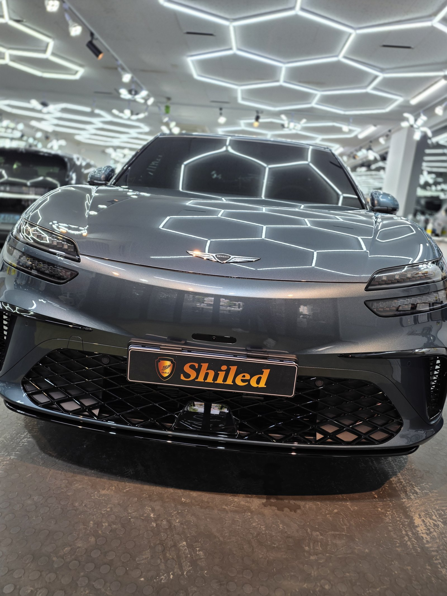
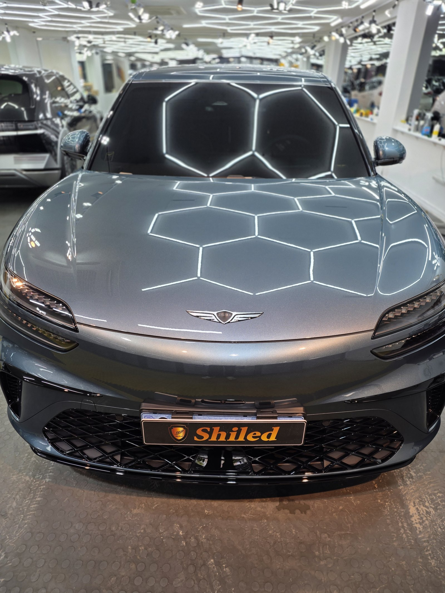
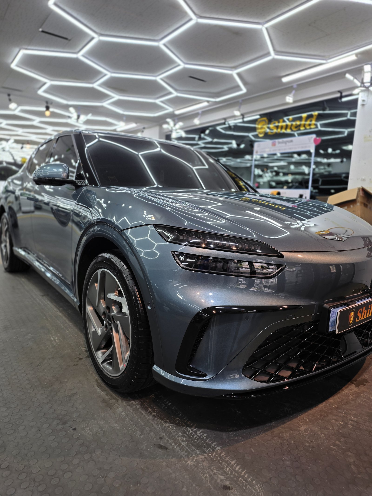
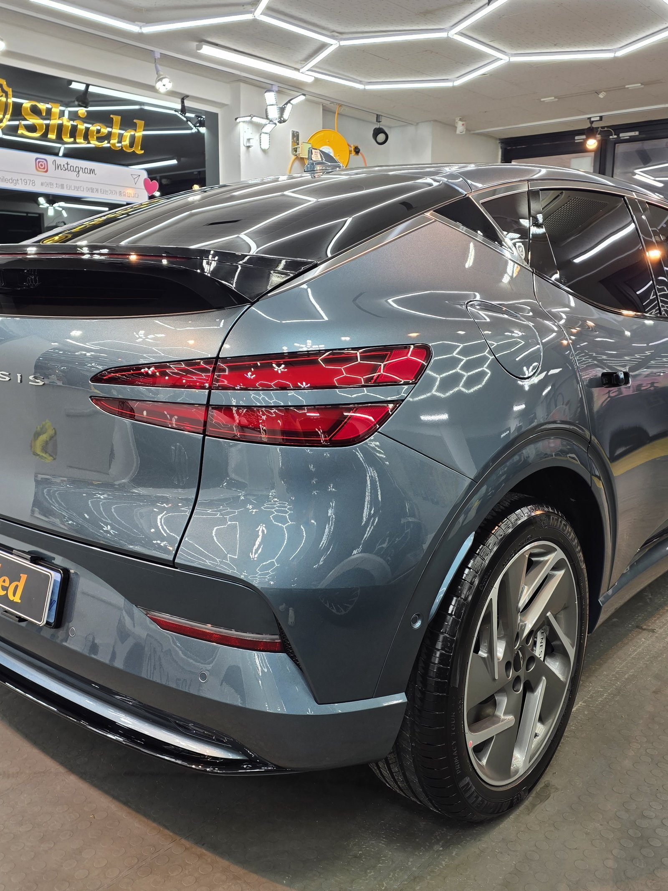
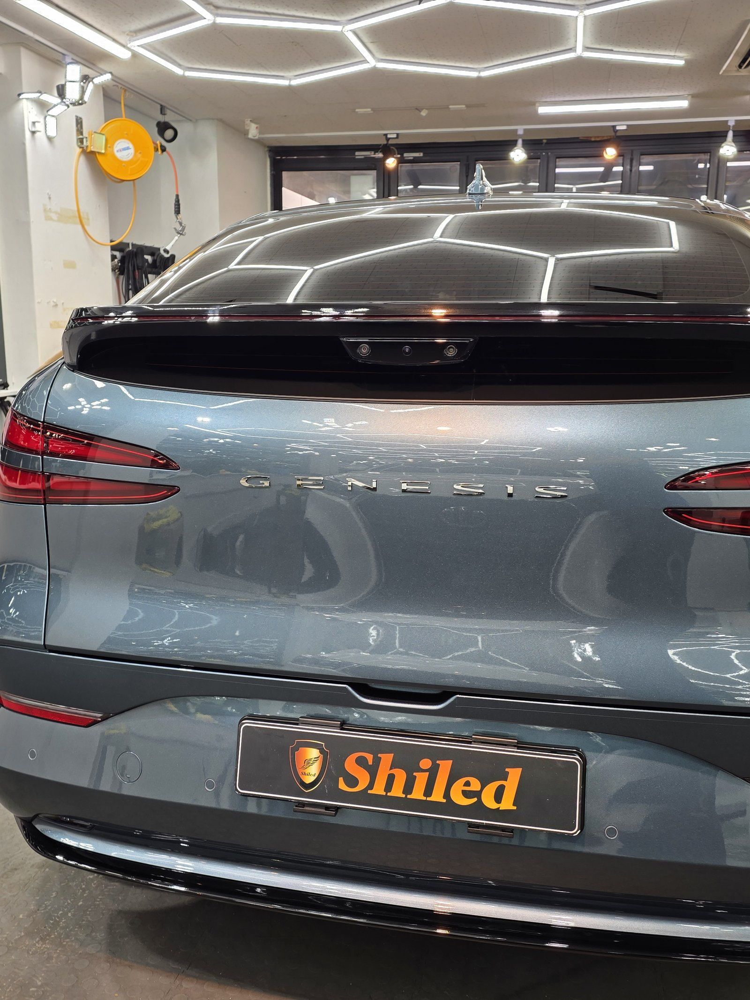
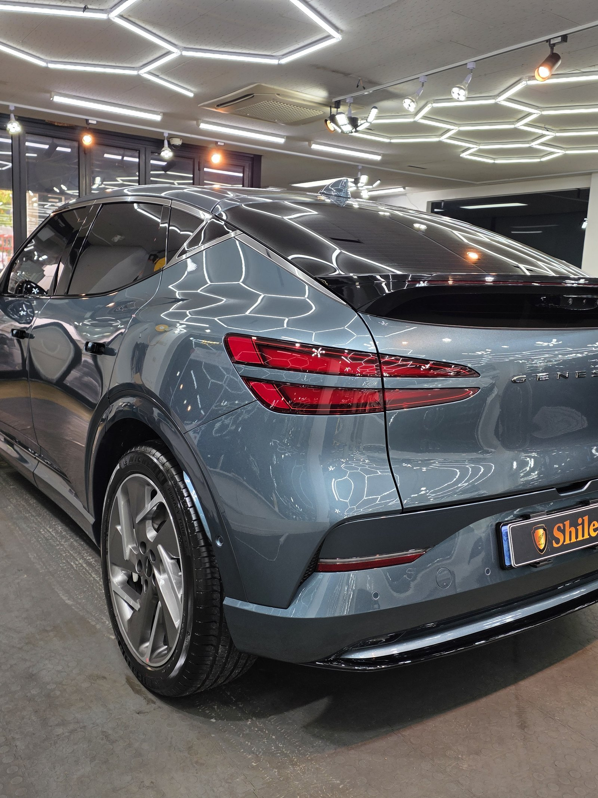
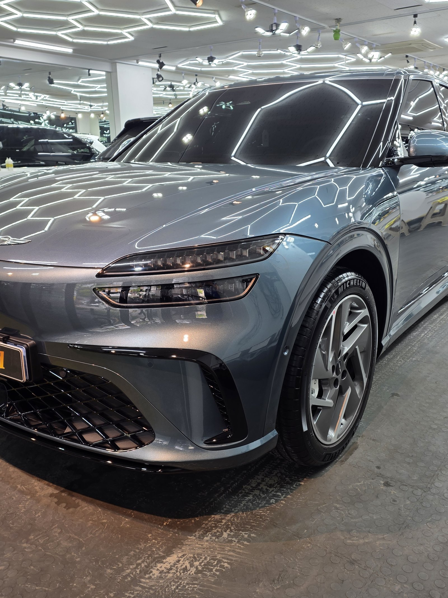
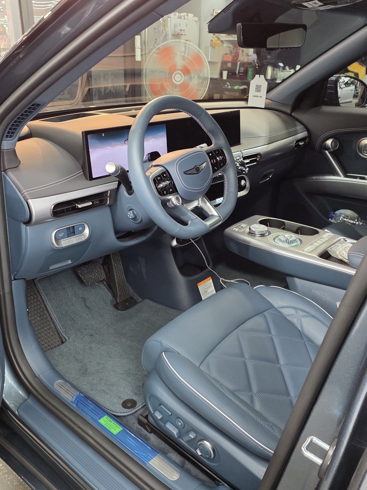
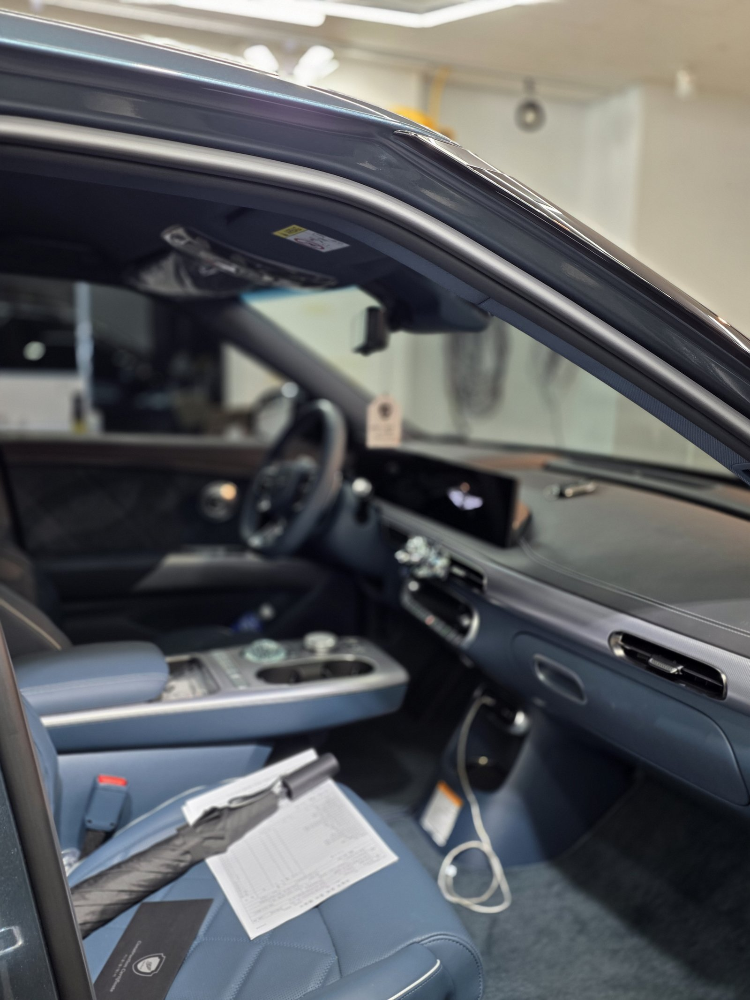
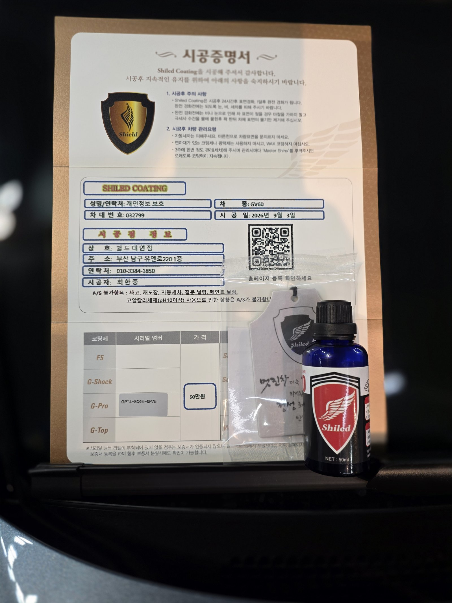

제네시스 GV60 블루, 전기차 SUV입니다.
부산 유리막코팅으로 출고 전 G-PRO 유리막코팅을 진행했습니다.

매장 헥사곤 조명 아래서 후드 라인을 따라 반사광이 끊김 없이 흘러갑니다. 크리스탈 스피어 손잡이가 아니라 일반 도어 핸들 사양이지만, 곡면이 유독 매끈하게 떨어지는 전기차 전용 플랫폼 특유의 실루엣이 그대로 드러납니다.
전기차도 왜 출고 전에 코팅을 하나
도장 자체는 내연차와 다를 게 없습니다.
다만 전기차는 엔진 소음이 없어 실내가 조용한 만큼 작은 잔기스도 눈에 잘 띈다는 차주분들의 이야기가 많습니다. 그래서 도장면이 가장 깨끗한 신차 상태, 그 시점에 코팅막을 입혀두는 것을 권해드립니다.

충전구가 있는 차, 마스킹부터 다르다
GV60은 펜더 쪽에 충전 포트가 있습니다.
일반 주유구와 개폐 구조가 달라서, 코팅제가 도어 틈으로 흘러 들어가지 않도록 충전구 주변을 따로 마스킹하고 작업합니다. 전기차코팅에서 빠지면 안 되는 손이 이 부분입니다.

기술자의 팁
전기차 SUV는 공기저항을 줄이기 위해 패널 이음선이 최소화돼 있습니다. 이음선이 적을수록 코팅제가 얇게 고르게 퍼져야 반사광이 끊기지 않습니다. 도포량을 패널별로 다르게 조절하는 이유입니다.


블루 색상에 G-PRO를 올린 이유
G-PRO는 경도를 끌어올려 스크래치 내성을 높이는 코팅입니다.
짙은 블루 계열은 흠집이 나면 스크래치 라인이 하얗게 도드라져 유독 눈에 띕니다. G-PRO를 올려두면 자잘한 스크래치 자체가 덜 생기고, 세차 중 발생하는 마이크로 스월도 줄어듭니다. 코팅제는 대표가 화학공학 전공으로 직접 개발·제조한 제품입니다.


인테리어까지 새 차 그대로
실내는 아직 출고 전 상태 그대로입니다.
블루 톤 스티치가 들어간 시트와 넓은 디스플레이가 전기차 특유의 미니멀한 실내를 보여줍니다. 외부 도장은 G-PRO로 경도를 잡고, 인도까지 깨끗한 상태로 관리합니다.


시공증명서를 함께 드립니다
모든 시공 차량에 시공증명서를 드립니다.
차종·시공일·코팅제 시리얼 번호가 적혀 있고, 홈페이지에 등록해 보증을 받으실 수 있습니다. 이 차는 G-PRO 코팅으로 기록돼 있습니다.

차종·시공일·코팅제 시리얼이 기재된 시공증명서
자주 묻는 질문
Q. 전기차도 유리막코팅이 필요한가요?
A. 필요합니다. 도장 자체는 내연차와 같은 방식으로 칠해지기 때문에 오염·스크래치에 노출되는 조건이 동일합니다. 오히려 정숙성이 좋아 잔기스가 눈에 잘 띄는 경우가 많아, 출고 전 코팅으로 처음 상태를 지켜두는 게 더 유리합니다.
Q. GV60 같은 전기차는 코팅할 때 뭐가 다른가요?
A. 충전 포트 주변 마스킹이 추가됩니다. 도어 대신 펜더 쪽에 있는 충전구는 개폐 구조가 일반 주유구와 달라, 코팅제가 틈으로 들어가지 않도록 별도로 감싸고 작업합니다.
Q. 블루 색상에는 어떤 코팅이 좋나요?
A. 이 차는 G-PRO로 진행했습니다. G-PRO는 경도를 끌어올려 스크래치 내성을 높이는 코팅입니다. 짙은 블루 계열은 흠집이 나면 유독 하얗게 도드라지는데, G-PRO를 올리면 자잘한 스크래치 자체가 덜 생겨 그 원인을 줄여줍니다.
Q. 쉴드광택 위치와 예약은 어떻게 하나요?
A. 부산 남구 유엔로220 1F 쉴드광택입니다. 예약·상담은 010-3384-1850, 대표 최한중이 직접 상담하고 책임 시공합니다.
전기차라고 코팅 순서가 대충이면 안 됩니다.
제품을 직접 만드는 사람이 직접 시공합니다.
부산에서 전기차 신차코팅을 고민 중이시면 편하게 연락 주십시오.
어떤 차를 타냐보다 어떻게 타냐가 중요합니다~!
시공 중에는 전화를 받지 못할 때가 많습니다.
카카오톡으로 차종과 원하시는 시공을 남겨주시면 확인 후 답변드립니다.
쉴드광택 · 부산 남구 유엔로220 1F · 대표 최한중